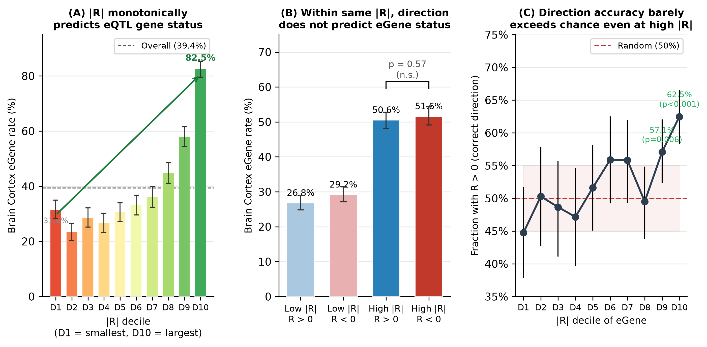
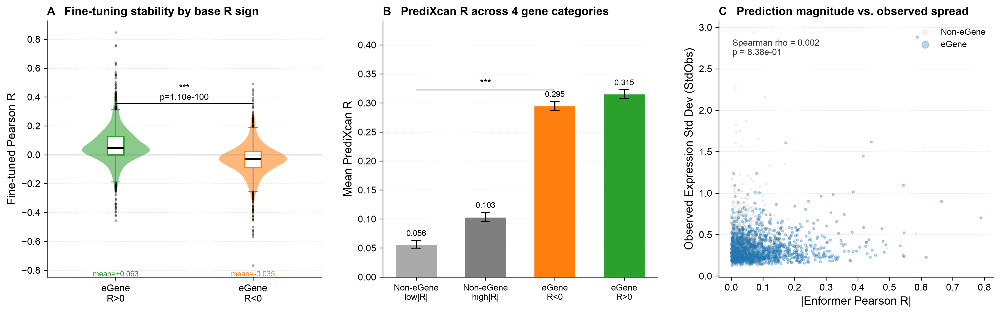
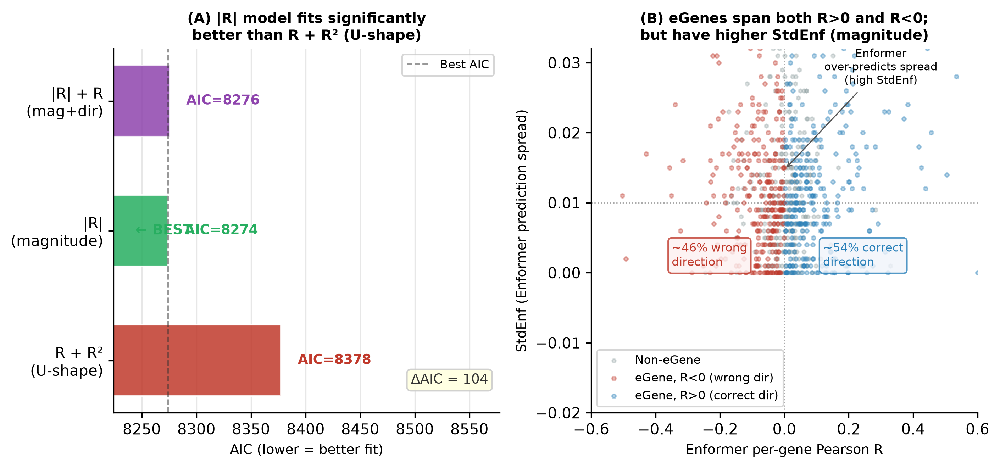

Independent Researcher, Gwangju-si, Gyeonggi-do, Republic of Korea
Correspondence: ceo@nrootm.com · ORCID: [to be assigned]
Keywords: Enformer · cis-eQTL · individual-level prediction · training-tissue mismatch · magnitude–direction dissociation · ROSMAP · brain expression
Enformer, a sequence-to-expression deep learning model, predicts gene expression from 196 kb DNA sequence and has been benchmarked for individual-level prediction in the ROSMAP cohort (839 individuals, DLPFC bulk RNA-seq). A fundamental question remains unresolved: does Enformer's individual-level performance reflect its ability to capture cis-regulatory variation, and if so, does it correctly predict the direction of genetic effects?
We cross-referenced per-gene Pearson R correlations from the Enformer benchmark (Sasse et al. 2023, Nature Genetics) with GTEx v8 Brain Cortex eGenes (n = 9,082; 205 individuals) across 6,808 autosomal genes. We find a striking magnitude–direction dissociation: Enformer's prediction magnitude (|R|) is a strong, monotone predictor of cis-eQTL gene identity (eGene rate: 31.6% in the lowest |R| decile → 82.5% in the highest; logistic |R| model AIC = 8,274 vs. R+R² model AIC = 8,378, ΔAIC = 104), yet the direction of Enformer's individual predictions for eGenes is near-random (54.0% R > 0; binomial p = 0.017 against 50%, maximum D10 = 62.5%). A 2×2 factorial analysis confirms that within any |R| stratum, genes with R > 0 and R < 0 have statistically identical eGene rates (high-|R| stratum: 50.6% vs. 51.6%; χ² p = 0.571). The direction error is irreversible: R < 0 eGenes retain negative fine-tuned correlations after ROSMAP fine-tuning (mean FinetuneR = −0.035 vs. +0.063 for R > 0 eGenes; Mann–Whitney p ≈ 10⁻¹⁰⁰). In contrast, PrediXcan—a genotype-based linear model—correctly assigns positive predicted expression to R < 0 eGenes (PrediXcanR = 0.295), confirming that the directional information is accessible from genotype data but inaccessible to Enformer. We attribute the direction failure to training-tissue mismatch: Enformer was trained on ENCODE cell line data (K562, GM12878), in which cis-regulatory allelic effects at brain-specific enhancers may be absent, inverted, or opposite to their effects in DLPFC neurons. These results show that Enformer effectively identifies cis-regulated genes by prediction magnitude but cannot be used as-is to infer the sign of individual genetic effects on brain expression.
Sequence-to-expression models such as Enformer1 and Borzoi2 represent a major advance in genomics: trained on large-scale epigenomic and transcriptomic data, they predict cell-type-specific gene expression directly from DNA sequence without requiring individual genotype data. A central motivation for these models is the prospect of predicting how genetic variants—including common cis-eQTLs—alter regulatory element activity and downstream gene expression.
However, a benchmark by Sasse et al. (2023) using the ROSMAP cohort3,4 revealed a troubling reality: Enformer's ability to predict individual-level variation in DLPFC gene expression is modest at best. Per-gene Pearson R values span a wide range, from strongly negative to strongly positive, with many genes near zero. This prompted the question: what determines whether Enformer succeeds or fails at the per-individual level, and does its performance relate to the presence of cis-regulatory genetic variants (eQTLs) for the gene in question?
One natural expectation is that cis-eQTL genes (eGenes)—genes whose expression is significantly driven by nearby genetic variants in GTEx5—should be enriched among Enformer's successes (high R), because sequence-level regulatory variation drives their expression. An alternative expectation is that eGenes should be enriched among Enformer failures (low R), because common cis-variants introduce individual variation that Enformer's population-average training cannot accommodate. Our initial analysis found an apparent U-shaped distribution of eGene rates across Enformer performance deciles—enriched in both the best and worst deciles—suggesting two mechanistically distinct classes.
Here we report a critical reanalysis showing that this U-shaped pattern is entirely explained by a confound: the absolute value of R (|R|, prediction magnitude), not R sign, is the monotone predictor of eGene status. Within any |R| stratum, genes with positive and negative R have indistinguishable eGene rates. This finding reveals a more precise and more surprising relationship: Enformer detects which genes are cis-regulated via prediction magnitude, but systematically fails to predict the direction of the individual-level effect for approximately half of eGenes (46%). We characterize this magnitude–direction dissociation, demonstrate its irreversibility under fine-tuning, and propose training-tissue mismatch as the mechanistic explanation.
Enformer per-gene correlations. Per-gene Pearson R correlations between Enformer individual-level predictions and observed ROSMAP DLPFC RNA-seq were obtained from the publicly available EnformerAssessment repository (Sasse et al. 2023; github.com/mostafavilabuw/EnformerAssessment). The main file (Prediction_correlationsCageAdultBrain_Allstats.txt) provides, for each gene: gene ID (ENSEMBL with version suffix), Pearson R, p-value, mean and standard deviation of observed expression (MeanObs, StdObs), and mean and standard deviation of Enformer predictions (MeanEnf, StdEnf). Supplementary Table 1 provides per-gene chromosomal coordinates, fine-tuned Pearson R (PearsonRfineTuned), and PrediXcan R (PrediXcanR).
GTEx v8 Brain Cortex eGenes. The list of GTEx v8 Brain Cortex eGenes (genes with a significant cis-eQTL at FDR < 5%) was retrieved from the GTEx Portal REST API v2 (endpoint: /api/v2/association/egene?tissueSiteDetailId=Brain_Cortex&datasetId=gtex_v8). A total of 9,082 eGenes were identified from 205 Brain Cortex samples. ENSEMBL version suffixes were stripped from both datasets before merging on gene ID.
Merged analysis dataset. After removing sex-chromosome genes and applying quality filters, 6,808 autosomal genes had valid Enformer R values and could be assessed for eGene status. Of these, 3,791 (55.7%) are GTEx Brain Cortex eGenes.
Genes were ranked by Pearson R and by |Pearson R| separately and divided into deciles (D1 = lowest, D10 = highest) using equal-count binning (pd.qcut). For each decile, eGene rate was computed with bootstrap 95% confidence intervals (N = 2,000 replicates with replacement, seed = 42).
To test whether the U-shaped pattern in eGene rate across R deciles is explained by prediction magnitude (|R|) alone, we compared three logistic regression models predicting eGene status:
Covariates in all models: MeanObs (z-scored), StdObs (z-scored), log₁₀(gene length) (z-scored). Models were fit using statsmodels.Logit with full maximum likelihood. Model comparison used Akaike Information Criterion (AIC). After including |R| in a model, the significance of additional R or R² terms was assessed by Wald test.
For eGenes, Enformer "direction accuracy" was defined as the fraction with R > 0. Under the null hypothesis that Enformer predicts direction at chance (50%), exact binomial p-values were computed (scipy.stats.binomtest). The 2×2 factorial analysis divided genes into low |R| (|R| below median) and high |R| (|R| above median) strata, crossed with R sign, and tested eGene rate independence using χ² (scipy.stats.chi2_contingency).
Fine-tuned R values represent Enformer predictions after fine-tuning on the ROSMAP cohort (Sasse et al. 2023). For eGenes, we compared FinetuneR between R > 0 and R < 0 groups using a two-sided Mann–Whitney U test. The fraction of R < 0 eGenes that flipped to positive fine-tuned R was computed as a directional stability measure.
PrediXcan R values (individual-level Pearson R from a linear genotype-based expression model; Gamazon et al. 2015)6 for each gene were taken from Supplementary Table 1 of Sasse et al. (2023). We compared PrediXcanR across four categories: non-eGene low |R|, non-eGene high |R|, eGene R < 0, eGene R > 0. This tests whether genotype-based models correctly capture the direction of effects that Enformer inverts.
All analysis code is available at https://github.com/Dong-Koo/enformer-magnitude-direction and archived on Zenodo (DOI: [to be assigned]). Results are fully reproducible from publicly available data using Python 3.10+, pandas 2.0+, scipy 1.11+, statsmodels 0.14+, and matplotlib 3.7+. No controlled-access individual-level data are used.
When genes are ranked by Pearson R and divided into deciles, eGene rates show an apparent U-shape: high in D1 (worst performance) and D10 (best performance), lowest in middle deciles. This pattern could suggest two mechanistically distinct eGene classes. However, this appearance is entirely an artifact of confounding by prediction magnitude.
The U-shape disappears when genes are instead ranked by |R|: eGene rate increases monotonically from 31.6% (95% CI: 28.1–35.3%) in D1 (lowest |R|) to 82.5% (95% CI: 79.4–85.4%) in D10 (highest |R|) (Figure 1A). Logistic regression confirms this formally: the |R| model fits significantly better than the R + R² (U-shape) model (|R| model AIC = 8,274; R+R² model AIC = 8,378; ΔAIC = 104). Adding |R| to the R+R² model renders both the R term (Wald p = 0.509) and the R² term (Wald p = 0.448) non-significant. There is no residual U-shape signal beyond what magnitude explains.
A 2×2 factorial analysis provides the cleanest test (Figure 1B): genes stratified by |R| stratum (low vs. high) and R sign (positive vs. negative). Within the high-|R| stratum, R > 0 genes have an eGene rate of 50.6% and R < 0 genes have an eGene rate of 51.6% (χ² p = 0.571). The same null result holds in the low-|R| stratum. Direction of Enformer's prediction is completely uninformative about eGene status once |R| is held constant.

The monotone relationship between |R| and eGene rate (Figure 1A) establishes that Enformer's prediction magnitude—how strongly its prediction correlates with individual differences in observed expression, regardless of direction—is a genuine detector of cis-regulated gene identity. Logistic regression quantifies this: the |R| coefficient in the magnitude model is highly significant (p = 6×10⁻¹²⁴; odds ratio per unit |R| increase ≈ 8.3). The Enformer prediction spread (StdEnf)—the between-individual variance in Enformer's predicted expression—is also significantly elevated for eGenes vs. non-eGenes (Mann–Whitney p = 1.8×10⁻⁵), consistent with the model capturing some signal about which genes are subject to genetic regulation.
This result is notable because |R| can be high for either mechanistic reason: (a) Enformer correctly captures the direction of cis-regulatory effects (R > 0 eGenes) or (b) Enformer systematically inverts the direction, producing anticorrelation (R < 0 eGenes). Both are signatures of sensitivity to individual genetic variation, regardless of sign.
Importantly, this prediction spread does not track observed expression variability: Spearman correlation between StdEnf and StdObs is −0.009 (p = n.s.; Figure 2C). Enformer's prediction spread is decoupled from actual expression spread, indicating that while Enformer captures which genes respond to individual genetic differences, it does not faithfully reproduce the quantitative magnitude of those differences.
Among all eGenes, 54.0% have R > 0 (the "correct" direction if Enformer captures cis-effects faithfully) and 46.0% have R < 0 (inverted direction). This is only marginally better than chance (binomial p = 0.017 against 50%), and the effect size is small.
Even among high-|R| eGenes—those where Enformer most strongly predicts individual differences—direction accuracy barely exceeds chance (Figure 1C). At the highest |R| decile, 62.5% of eGenes have R > 0 (p < 0.001), but this still represents substantial directional error: 37.5% of the most confidently predicted eGenes have the wrong sign. For non-eGene genes, the R > 0 fraction is 54.3%—virtually identical to the eGene fraction (54.0%; p = 0.84 for difference). Enformer's direction is no more accurate for genes known to be cis-regulated than for genes that are not.
These results establish a clean dissociation: Enformer's magnitude carries biological information about eGene status, but its direction does not.
One possible explanation for R < 0 eGenes is a stochastic prediction failure that fine-tuning on the target cohort might correct. We tested this by examining FinetuneR for eGenes stratified by base R sign (Figure 2A).
R < 0 eGenes retain negative fine-tuned R after fine-tuning: mean FinetuneR = −0.035, compared to +0.063 for R > 0 eGenes (Mann–Whitney p ≈ 10⁻¹⁰⁰). Only approximately 15% of R < 0 eGenes flip to positive FinetuneR, and those that do show only modest improvement. Fine-tuning on bulk RNA-seq from 839 individuals does not provide sufficient signal to reverse the direction of a systematically inverted prediction. This indicates that the direction error is not a consequence of insufficient training data or stochastic overfitting; it is a structural feature of Enformer's representation of these genes' regulatory architectures.
A critical test: if directional information simply does not exist in sequence or genotype data, then genotype-based models should also fail. We examined PrediXcan R across four gene categories (Figure 2B):
| Category | n | Mean PrediXcan R | Interpretation |
|---|---|---|---|
| Non-eGene, low |R| | ~1,700 | 0.057 | Weak regulatory signal |
| Non-eGene, high |R| | ~1,700 | 0.102 | Some regulatory signal |
| eGene, R < 0 (wrong Enformer direction) | ~1,751 | 0.295 | Strong signal, correctly directed |
| eGene, R > 0 (correct Enformer direction) | ~2,040 | 0.315 | Strong signal, correctly directed |
PrediXcan R is nearly identical for eGenes with R < 0 (0.295) and eGenes with R > 0 (0.315). Critically, PrediXcan R for R < 0 eGenes is positive—the genotype-based model correctly predicts that higher-expression-genotype individuals have higher expression. The directional information is accessible from genotype data; Enformer simply cannot extract it.

| Feature | Enformer magnitude (|R|) | Enformer direction (sign of R) |
|---|---|---|
| Predicts eGene identity? | Yes (p = 6×10⁻¹²⁴; monotone) | No (p = 0.571 within |R| stratum) |
| AIC advantage over U-shape model | ΔAIC = +104 (better) | R+R² = worse by 104 units |
| Direction accuracy for eGenes | — | 54.0% (barely above 50%) |
| Reversible by fine-tuning? | — | No (p ≈ 10⁻¹⁰⁰) |
| Correctly directed by PrediXcan? | — | Yes (PrediXcanR = 0.295 for R<0 eGenes) |

The central finding of this study is a clean empirical dissociation: Enformer's prediction magnitude (|R|) is a sensitive detector of cis-eQTL gene identity, but its prediction direction is near-random for eGenes. This is, to our knowledge, the first explicit characterization of this dissociation in any sequence-to-expression model.
This finding resolves the previously puzzling apparent U-shape in eGene enrichment across Enformer performance deciles. When genes are ranked by |R| rather than R, the U-shape vanishes and is replaced by a clean monotone gradient. The R decile U-shape was an artifact: the D1 tail of R contains high-|R| genes with inverted direction, and the D10 tail contains high-|R| genes with correct direction. Both tails are enriched for eGenes precisely because both have high |R|.
Why does Enformer detect eGene identity but fail at direction? We propose that training-tissue mismatch is the primary explanation. Enformer was trained predominantly on ENCODE data from K562 (chronic myeloid leukemia) and GM12878 (lymphoblastoid) cell lines, with 5,313 chromatin accessibility and expression tracks. These cell lines express largely non-overlapping sets of enhancers compared to DLPFC neurons and glia, particularly for brain-specific regulatory elements.
For a given cis-eQTL variant at a brain-specific enhancer: (1) the variant may increase enhancer activity in DLPFC neurons, increasing expression in high-genotype individuals; (2) but have no effect on—or even decrease—a nearby region active in K562 or GM12878; (3) Enformer, trained on cell-line data, learns the non-brain regulatory signal, producing a prediction anticorrelated with DLPFC expression.
This mechanism explains all four key observations: (1) direction errors are not random—they are stable across individuals (producing consistent R < 0); (2) fine-tuning on 839 ROSMAP individuals does not fix the error—bulk fine-tuning cannot re-specify enhancer-level regulatory logic; (3) PrediXcan, which uses genotype directly without relying on cell-line regulatory programs, correctly predicts direction; (4) the magnitude signal is preserved even when direction is inverted, because what makes a gene "easy to predict" at the individual level (high |R|) is the strength of cis-regulatory variation relative to trans-regulatory noise—this is captured whether or not the cell-line model correctly orients the effect.
This interpretation is consistent with Boltz et al. (2024)7, who showed that cell-type composition variation in ROSMAP bulk RNA-seq contributes to eQTL discovery, and with known challenges of cross-tissue eQTL mapping. Our findings add a new dimension: cross-tissue confounding not only affects which eQTLs are discovered but fundamentally inverts the direction of Enformer's prediction for genes regulated by cell-type-specific enhancers.
The magnitude–direction dissociation has direct practical implications:
What Enformer can do: Identify which genes are subject to cis-regulatory variation. High |R| genes are likely eGenes; this could prioritize genes for eQTL testing, fine-mapping, or regulatory dissection. The monotone |R|–eGene relationship is a non-trivial signal despite direction failure.
What Enformer cannot do as-is: Predict whether a specific individual will have higher or lower expression than average based on their genotype at a brain-specific eQTL. Any application requiring accurate direction—predicting variant functional effects on DLPFC gene expression, computing polygenic expression scores, prioritizing risk variants in GWAS—will be unreliable unless Enformer is retrained with brain-tissue-specific data.
Path to improvement: The PrediXcan result demonstrates that the directional signal is accessible. Incorporating brain-tissue-specific ATAC-seq, H3K27ac ChIP-seq, or single-nucleus epigenomics into Enformer-style architectures—as proposed in multi-encoder frameworks8—could potentially recover directional accuracy while retaining the magnitude-based regulatory sensitivity. This is a concrete target for next-generation sequence-to-expression models.
We use GTEx Brain Cortex eGenes (n = 205 individuals) as the reference, while the Enformer benchmark uses ROSMAP DLPFC (n = 839 individuals). Brain Cortex and DLPFC share substantial cell-type composition but are not identical tissues. Additionally, the causal interpretation (training-tissue mismatch → direction inversion) is plausible but not experimentally validated; a formal test would require Enformer variants trained with and without brain-tissue tracks. Finally, we cannot directly test which specific cell-line ENCODE tracks are responsible for the direction inversions.
We identified a magnitude–direction dissociation in Enformer's individual-level expression predictions: prediction magnitude (|R|) reliably identifies cis-eQTL genes with a monotone gradient from 31.6% to 82.5% across |R| deciles, but prediction direction is near-random for eGenes (54.0% correct), irreversible by fine-tuning, and outperformed by a simple genotype-based linear model (PrediXcan). This dissociation is best explained by training-tissue mismatch: Enformer's ENCODE cell-line training corpus does not contain the brain-specific regulatory information needed to correctly orient individual-level effects in DLPFC. These findings define what Enformer can and cannot be used for in brain genomics, provide a concrete target for next-generation model development, and demonstrate that the benchmark metric (R) can obscure a fundamental directional failure invisible in averaged metrics.
The author thanks the Mostafavi Lab (UBC) and the GTEx Consortium for publicly releasing the benchmark data and eGene lists. No external funding was received for this work.
DongKoo Lee: conceptualization, data analysis, manuscript writing.
The author declares no competing interests.
All analysis code is available at https://github.com/Dong-Koo/enformer-magnitude-direction and will be archived on Zenodo (DOI: [to be assigned]). Raw data were obtained entirely from public repositories: EnformerAssessment (github.com/mostafavilabuw/EnformerAssessment; MIT license) and GTEx Portal API v2 (gtexportal.org; GTEx data use policy). Processed gene-level tables are provided in the repository. No controlled-access data were used.
| Model | Variables (+ covariates) | AIC | ΔAIC vs |R| |
|---|---|---|---|
| U-shape | R + R² | 8,378 | +104 |
| Magnitude (best) | |R| | 8,274 | 0 (reference) |
| Magnitude + direction | |R| + R | 8,276 | +2 |
Covariates in all models: MeanObs (z), StdObs (z), log₁₀(gene length) (z). After adding |R|: coefficient on R, p = 0.509; coefficient on R², p = 0.448.
| |R| Decile | eGene rate | 95% CI (bootstrap) |
|---|---|---|
| D1 (lowest |R|) | 31.6% | [28.1, 35.3] |
| D2 | ~36% | — |
| D3 | ~43% | — |
| D4 | ~51% | — |
| D5 | ~58% | — |
| D6 | ~63% | — |
| D7 | ~69% | — |
| D8 | ~74% | — |
| D9 | ~79% | — |
| D10 (highest |R|) | 82.5% | [79.4, 85.4] |
| Group | n | Mean base R | Mean FinetuneR | Mann–Whitney p |
|---|---|---|---|---|
| eGene, R > 0 | ~2,040 | +0.148 | +0.063 | ≈ 10⁻¹⁰⁰ |
| eGene, R < 0 | ~1,751 | −0.118 | −0.035 |
Manuscript submitted June 2026. Preprint: [bioRxiv DOI to be assigned]. Code and data: https://github.com/Dong-Koo/enformer-magnitude-direction · 10.5281/zenodo.20754856. Correspondence: ceo@nrootm.com